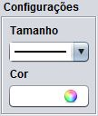

Para editar uma imagem, selecione uma imagem e acione o botão localizado no Painel de Imagens.
O sistema irá abrir o laboratório de edição mostrando a imagem selecionada e as opções de edição de imagens. Veja as funcionalidades de cada painel de opções:
|
Painel Ferramentas Ferramenta de Seta: utilizada para desenhar setas sobre a imagem. Para desenhar, clique em um ponto inicial da imagem e arraste até um ponto final. Note que é possível escolher a direção da seta. Ferramenta de Retângulo: utilizada para desenhar retângulos sobre a imagem. Para desenhar, clique em um ponto inicial da imagem e arraste até um ponto final. Ferramenta de Círculo: utilizada para desenhar círculos sobre a imagem. Para desenhar, clique em um ponto inicial da imagem e arraste até um ponto final. Ferramenta de Linha: utilizada para desenhar linhas retas sobre a imagem. Para desenhar, clique em um ponto inicial da imagem e arraste até um ponto final. Ferramenta de Desenho a mão livre: utilizada para desenhar livremente sobre a imagem, semelhante a um lápis. Para desenhar, clique em um ponto inicial da imagem e arraste até um ponto final. Ferramenta de Texto: utilizada para escrever sobre a imagem. Ao selecionar esta opção, é habilitado o Painel de Configurações de Fonte para configurar o texto antes de inseri-lo sobre a imagem. Para inserir o texto, clique em um ponto da imagem onde deseja escrever. Irá aparecer um cursor piscando. Digite o texto desejado e pressione a tecla ENTER ou clique em outra área da imagem para concluir. |
|
Painel Controles Este painel é responsável por controlar as modificações feitas, sendo possível Desfazer ou Refazer as ações sobre a imagem. |
|  |
Painel Configurações Este painel é disponibilizado para configurar as opções da ferramenta selecionada, sendo possível escolher o tamanho ou espessura do contorno, bem como definir a cor do objeto a ser inserido sobre a imagem. Obs.: A opção Tamanho não se aplica para a Ferramenta de Texto, pois esta ferramenta possui um painel específico. |
|
Painel Configurações de Fonte Neste painel é possível configurar as opções específicas da ferramenta de texto. Você pode escolher o tipo de fonte, tamanho, e habilitar as opções negrito e itálico. |
|
Painel Ajustes de Imagem Este painel faz o controle dos filtros de Brilho e Contraste. Para definir novos valores para estas opções, utilize os slides, deslizando-os para direita ou para esquerda. Os valores variam de -1 (menos um) a 1 (um), tendo como padrão o valor 0 (zero) |
Após concluir a edição da imagem, clique no botão para gravar a nova imagem.